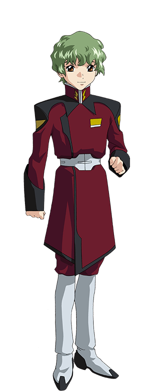

資源衛星「ヘリオポリス」に暮らしている。
ガンダム奪取作戦に巻き込まれ、なりゆきで地球連合軍の秘密兵器「ストライクガンダム」のパイロットになってしまう。
もう一人の主人公。キラの親友でありライバル。
ガンダム奪取作戦に参加し、5機の「ガンダム」のうち4機を奪取する。
そのうちの1機「イージスガンダム」のパイロットとなり、キラと激闘を繰り広げることになる。
ザフト軍パイロット。デュエルガンダムに搭乗。
アスランにエースパイロットの座を奪われ、彼に対し粘着質な感情を持つ。
ザフト軍パイロット。バスターガンダムを操る。
怒ると狡猾な性格があらわになる。
ザフト軍パイロット。ブリッツガンダムを操る。
アスランを兄のように慕う。